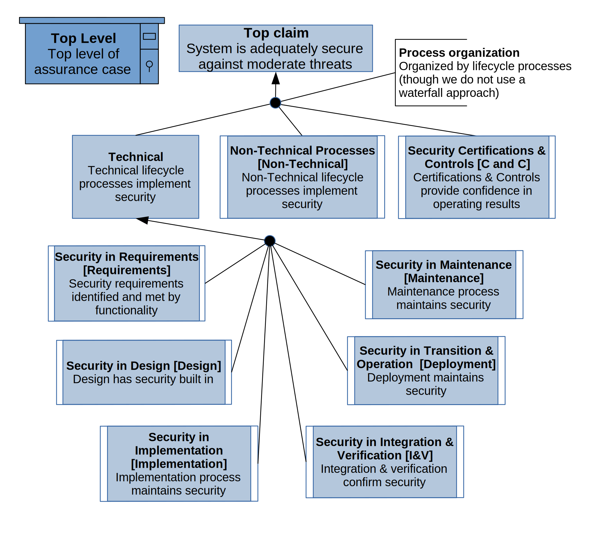
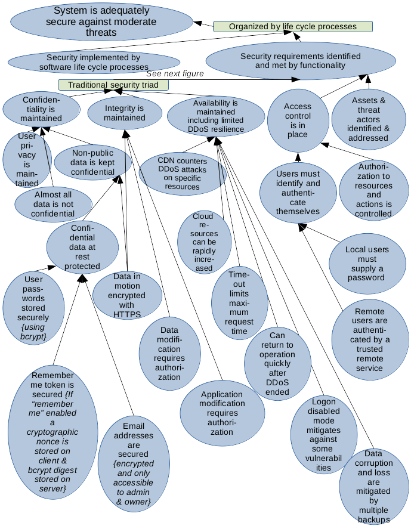
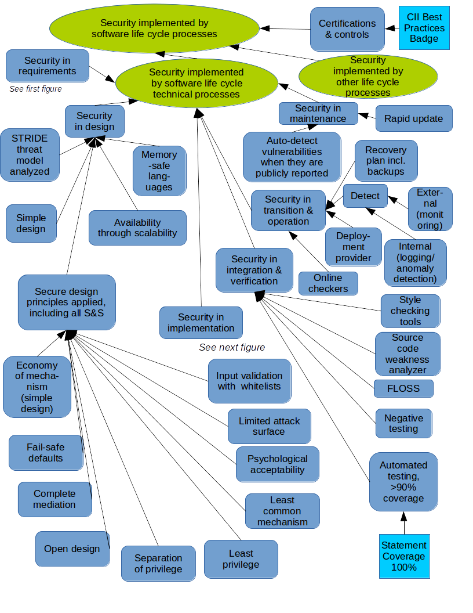
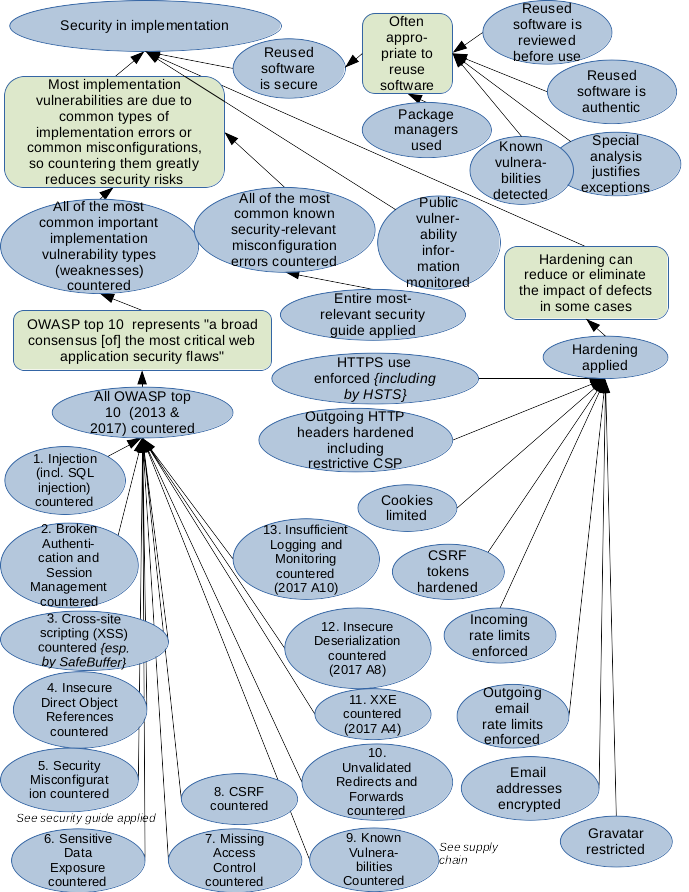
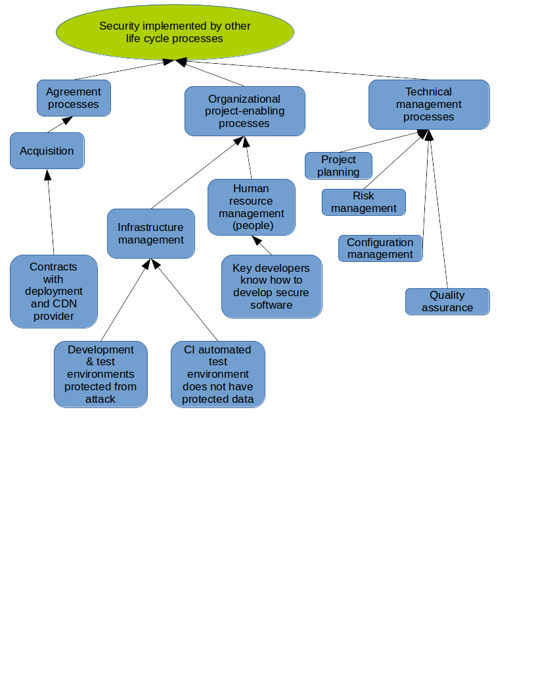
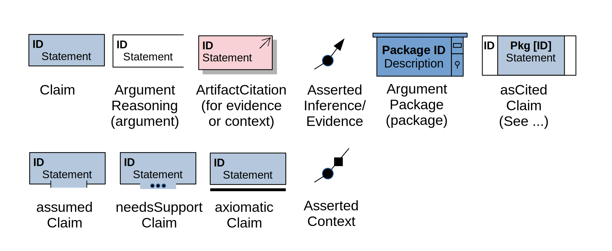

Security is important and challenging.
This document describes why we think this software (the "BadgeApp")
is adequately secure.
In other words, this document is the "assurance case" for the BadgeApp.
This document is the result of continuous threat/attack modeling
while the system is developed and maintained, and it is modified
as the situation changes.
For simplicity, this document also serves as detailed documentation of
the security requirements, since in this case we found it
easier to put them all in one document.
Sadly, perfection is rare; we really want your help.
If you find a vulnerability, please see
CONTRIBUTING.md#how_to_report_vulnerabilities
for how to submit a vulnerability report.
For more technical information on the implementation, see
implementation.md.
You can see a video summarizing an older version of
this assurance case (as of September 2017),
along with some more general information about developing secure software:
"How to Develop Secure Applications: The BadgeApp Example" by David A. Wheeler, 2017-09-18.
For more information on developing secure software, see
"Secure Programming HOWTO" by David A. Wheeler.
A Sample Security Assurance Case Pattern by David A. Wheeler (2018)
shows how to create an assurance case for your project, using
a version of this assurance case as an example.
We thank Scott Ankrum (MITRE)
for analyzing an earlier version of this assurance case.
He provided a number of helpful comments and provided a lot of feedback
in how to convert its notation from the
Claims, Arguments, and Evidence (CAE) notation to
Structured Assurance Case Metamodel (SACM) notation.
For his initial work in converting this assurance case to SACM notation, see
BadgeApp Assurance Case in SACM Notation by T. Scott Ankrum, The MITRE Corporation, May 2021.
The following figures summarize why we think this application
is adequately secure (more detail is provided in the rest of this document):
The figures are simply a summary; the text below provides the details.
We are in the early stages of switching from
Claims, Arguments, and Evidence (CAE) notation to the
Structured Assurance Case Metamodel (SACM) graphical notation.
We've converted the top level to SACM notation, and here it is:

Currently our full assurance case is recorded in CAE notation.
Here is the assurance case summary in CAE notation:




Our overall security approach is called
defense-in-breadth, that is, we consider
security (including security countermeasures) in all
our relevant software life cycle processes (including
requirements, design, implementation, and verification).
In each software life cycle process we
identify the specific issues that most need to be addressed,
and then address them.
We do not use a waterfall model for software development.
It's important to note that when we use the word process it
has a completely different meaning from a stage (aka phase).
Instead, we use the word "process" with its standard meaning in
software and systems engineering, that is,
a "process" is just a "set of interrelated or interacting activities
that transforms inputs into outputs" (ISO/IEC/IEEE 12207:2017).
In a waterfall model, these processes are done to completion
in a strict sequence of stages (where each stage occurs for some
period of time).
That is, you create all of the requirements in
one stage, then do all the design in the next stage, and so on.
Winston Royce's paper "Managing the Development of Large Software Systems"
(1970) notes that in software development this naive waterfall approach
"is risky and invites failure" - in practice
"design iterations are never confined to the successive steps".
We obviously do determine what the software will do differently
(requirements), as well as design, implement, and verify it, so we
certainly do have these processes.
However, as with almost all real software development projects,
we perform these processes in parallel, iterating and
feeding back as appropriate.
Trying to make decisions without feedback is extremely dangerous, e.g., see
How Our Physics Envy Results In False Confidence In Our Organizations.
Each process is (notionally) run in parallel;
each receives inputs and produces outputs.
To help make sure that we "cover all important cases", most of
this assurance case is organized by the life cycle processes
as defined by ISO/IEC/IEEE 12207:2017,
Systems and software engineering - Software life cycle processes.
We consider every process, and include in the assurance case every
process important to it.
We don't claim that we conform to this standard, instead, we simply
use the 12207 structure to help ensure that we've considered
all of the lifecycle processes.
There are other ways to organize assurance cases, and we have taken
steps to ensure that issues that would covered by them are indeed covered.
An alternate way to view security issues is to discuss
"process, product, and people";
we evaluate the product in the verification process, and
the people in the human resources process.
It is important to secure the enabling environments, including the
development environments and test environment; it may not be obvious,
but that is covered by the infrastructure management process.
At the end we cover certifications and controls, which also help us
reduce the risk of failing to identify something important.
The following sections are organized following the assurance case figures:
We conclude with a short discussion of residual risks,
describe the vulnerability report handling process, and make
a final appeal to report to us if you find a vulnerability.
In this assurance case we typically point to source code or tests as
evidence, and not the results of the tests themselves. We do not
ship to production unless tests pass, so there is usually no reason to
see the test results unless a test fails.
That said, the test results for the master branch
are available if desired at:
https://app.circleci.com/pipelines/github/coreinfrastructure/best-practices-badge?branch=master
(Note to editors: to edit the figures above, edit the .odg file, then
export to .png so that it can viewed on GitHub.)
Our full assurance case is currently described in CAE notation.
Claims, Arguments and Evidence (CAE) notation
is a simple notation often used for assurance cases.
In CAE notation,
Ovals are claims or sub-claims, while rounded rectangles are the supporting
arguments justifying the claims.
Evidence, where shown, are in rectangles.
We do not show most evidence in the figures, but provide the evidence in
the supporting text below instead, because large figures are time-consuming
to edit and for our purposes providing most evidence only in the supporting
test is adequate.
Some figures of this assurance case uses a subset of the
[Object Management Group (OMG) Structured Assurance Case Metamodel (SACM)](Structured Assurance Case Metamodel (SACM))
graphical notation.
The OMG specification, which is publicly available, defines SACM in detail.
In this section we'll explain the subset of SACM
graphical notation and conventions that we use.
Assurance cases typically use one of three graphical notations:
Claims- Arguments- Evidence (CAE) notation,
Goal Structuring Notation (GSN), or the SACM graphical notation.
The original BadgeApp assurance case used the
CAE notation because it is simple and the SACM graphical notation did not exist.
However, the SACM specification version 2.1 added in 2020
a graphical notation that has many advantages, so we have switched to SACM.
Later in this document we'll discuss the advantages of SACM.
Here is the subset of the SACM graphical notation that we use:

The text shows an ID and colon (in bold), followed by whitespace and
its description.
The SACM graphical notation includes many other features (such as
contexts and other kinds of relationships) that we don't use.
In SACM these elements can have "notes" attached to them; the equivalent
to notes is the text in this document.
The notes may refer to added evidence and/or arguments.
We don't use many other constructs, such as SACM contexts.
The paper
"A Visual Notation for the Representation of Assurance Cases using SACM"
(2020) provides more information, but unfortunately that paper
is not publicly available.
In the rest of this document we will often use the term "argument"
for SACM’s ArgumentReasoning, and "evidence" for ArtifactReference,
because these are simpler terms.
Here are some conventions we use:
We believe the basic security requirements have been identified and met,
as described below.
The security requirements identified here were developed through our
requirements process, which merges
three related processes in ISO/IEC/IEEE 12207
(business or mission analysis, stakeholder needs and requirements definition,
and systems/software requirements definition).
Security requirements are often divided into three areas called the
"CIA triad": confidentiality, integrity, and availability.
We do the same here below, including a discussion of why we
believe those requirements are met.
These justifications depend on other processes
(e.g., that the design is sound, the implementation is not vulnerable,
verification is adequate), which we will justify later.
This is followed by a discussion of access control, and then
a discussion showing that the
the assets & threat actors have been identified & addressed.
See the design section for discussion about why we believe is not possible
to bypass the mechanisms discussed below.
One of our key requirements is to
"protect users and their privacy".
Here is a brief discussion on how we do that.
First, the basics.
We work hard to comply with the
EU General Data Protection Regulation (GDPR), which has many requirements
related to privacy.
We have a separate document that details how we
implement privacy in the CII Best Practices Badge site and comply with
the GDPR:
Privacy in the CII Best Practices site, focusing on the GDPR.
As discussed later, non-public data is kept confidential
both at rest and in motion
(in particular, email addresses are protected).
Part of our privacy requirement is that we
"don't expose user activities to unrelated sites (including social media
sites) without that user's consent";
here is how we do that.
We must first define what we mean by an unrelated site.
A "related" site is a site that we are directly using to provide our service,
in particular our cloud provider (Heroku which runs on
Amazon's EC2 cloud-computing platform), CDN provider (Fastly),
authorization and avatar services provider (GitHub),
external avatar services (Gravatar),
and logging / intrusion detection service.
As a practical matter, related sites must (under various circumstances)
receive some information about the user (at least that the user
is trying to do something).
This is true for all websites, so it's true for our site as well.
In those cases we have selected partners we believe are trustworthy, and
we have some kind of relationship with them.
However, there is no reason unrelated sites
must see what our users are doing,
so we take many steps to prevent unrelated sites from
learning about our users' activities (and thus maintaining user privacy):
Note that user avatar images are handled specially. We consider
the few avatar-serving domains that we use as related sites.
This issue may not be obvious, so here we'll explain it further.
A user can choose a representative avatar
(currently via GitHub or Gravatar).
Anyone who requests that user's information page will
receive an img reference to that user-selected avatar so that
the requestor can see it.
External avatar images are only shown from specific domains
('secure.gravatar.com' or 'avatars.githubusercontent.com'), they are
only included if the user has an avatar, and they are only shown to
others through this mechanism if that user's information was requested.
This functionality is useful, because these images can help others remember
who the user is.
We have considered ways to further limit information sharing with avatar
services even though they are related sites (and thus we do not have
to limit information sharing any further).
We have had some success, but current law and technology provide challenges.
We could download these images and re-serve them (such as via a proxy),
but copying or proxying the images
using our own site might be considered a copyright violation
and would also impose the need for significant extra resources.
Thus, since we do not serve avatars ourselves, we must direct requesters
to them, so at the very least the requestor's externally-visible IP address
must be visible to the external avatar service (so the image can be provided).
To provide additional privacy, we would like to also
limit requestor headers and third-party cookies when using third-party
avatar services
(since these are the primary mechanisms that reveal more information
about the requestor to the third party avatar service).
Here is our current state:
referrerpolicy="no-referrer" attribute to the imageNote that we consider that things are very different
when a user actively clicks on a hypertext link to go to a different web site.
In this case, the user has actively selected to visit that different web site,
and thus expressly consented to the usual actions that occur when visiting
a different web site.
The different web site must know the IP address of the user anyway
(to send the data), and any cookie communications with that site involve
that other site.
We do allow referrer information to be sent in this case.
When a user actively selects a hypertext link, it is normal web behavior
for the receiving site to be provided with information on the referrer
via the "referer" (sic) HTTP header as specified in
RFC 1945 (HTTP 1.0) from May 1996.
This referrer information reports where the user "came from".
This information is useful for many circumstances, including notifying
recipients that people are discovering their site using our site.
It would be possible for us to
disable sending referrer information
(e.g., by using rel="noreferrer" in hypertext links or
by setting a referrer policy via HTTP or the meta tag), but this
would inhibit normal default web behavior.
However, when users expressly choose to click on a link from our site,
there is express consent to visit the other site,
so we do not see this an issue.
In addition, users who do not want to share referrer information can
configure their browser to omit referrer information; this would
be a much better choice for users who do not want referrer information
to be shared.
Information on how to disable referrer heading information is
available from multiple sources, e.g.,
"How to Change Referer Header Settings: Why It’s Useful" by John Anthony,
"Turn Referrer Headers On or Off in Firefox" by Mitch Bartlet,
and
"Why Should you Change your Referer Header settings & How to do it" by Douglas Crawford.
Of course, to access any site on the Internet
the user must use various services and
computers, and some of those could be privacy-exposing.
For example, the user must make a request to a DNS service to find our
service, and user requests must transit multiple Internet routers.
We cannot control the systems that users choose to use; instead, we ensure that
users can choose what services and computers they will trust.
The BadgeApp does not filter out any particular source
(other than temporary blocks if the source becomes a source of attack).
Therefore, users who do not want their activities monitored
could choose to use a network and computer they trust,
a Virtual Private Network (VPN), or an anonymity network such as Tor
to provide additional privacy when they interact with the BadgeApp.
We try to store as little confidential information as we reasonably can,
as this limits the impact of any confidentiality breach.
Almost all data we collect is considered public, e.g., all project data,
who owns the project information, and GitHub user names.
Therefore, we don't need to keep those confidential.
For each user account we store some other data.
Some we present to the public, such as claimed user name,
creation time, and edit times; we present these as we consider that
public information.
We do not present the user's preferred locale to the public, under the
theory that we don't know of a reason someone else would
have a legitimate reason to know that.
However, all of this is not considered sensitive data and it is certainly
not identifying information, so we would not consider it a breach
if someone else got this information (such as the preferred locale).
Non-public data is kept confidential.
In our case, the non-public data that must be kept confidential
are the user passwords, the "remember me" token (login nonce)
if the user has enabled the remember me function, and user email addresses.
We do consider this data higher-value and protect them specially.
User passwords for local accounts are only stored on the server as
iterated per-user salted hashes (using bcrypt), and thus cannot
be retrieved in an unencrypted form later on from a recorded database.
Any user password sent to the system is sent by the application router
to the "update" method of the user controller
(app/controllers/users_controller.rb). The update method invokes the
"save" method of the user model (app/models/user.rb).
The user model includes the standards Rails
has_secure_password request, which tells the system to save
the password after it has been encrypted with bcrypt
(instead of storing it directly), and to later do comparisons using
only the bcrypted value.
Note that no normal request can later retrieve a password, because
it is immediately encrypted on change or check and the original
unencrypted password is discarded.
The unencrypted email address may remain for a while in server memory
until that memory is recycled, but we assume that the underlying
system will protect memory during the time before it is garbage-collected
and reused.
To help users avoid the worst passwords, we check proposed passwords
against a list of bad passwords and don't allow passwords to change to them.
This complies with NIST Special Publication 800-63B section 5.1.1.2.
That list is long, so for speed we keep this list in the database
(if we kept it in memory it would use a lot of memory).
We don't trust long-term storage, so it's vital that we never record
in logs a query that includes an unencrypted password.
Also, while we trust our database and its connections, we want to limit
privileges where we can. Thus, we take two steps to protect passwords
while we check them against the bad password list in the database:
BADGEAPP_BADPWKEYrake update_bad_password_db (it takes a few minutes).Users may choose to "remember me" to automatically re-login on
that specific browser if they use a local account.
This is done by enabling the "remember me" checkbox when logging in to
a session.
If a user does enable "remember me" we implement automatic
login when the user makes later requests. This is implemented using a
cryptographically random nonce stored in the user's web browser
cookie store as a permanent cookie.
Note that this nonce does not include the user's original password.
On the server side this nonce is encrypted via bcrypt just like
user passwords are stored.
Here is how we do this: Any attempt to login is routed to the
"new" method of the sessions controller in
app/controllers/sessions_controller.rb, which calls method
local_login, and if login is successful it
calls local_login_procedure.
If the user selected remember_me, the
local_login_procedure will call the remember method in
the user model (in app/models/user.rb) to create and store the
remember_token in the user's cookie store and the corresponding
bcrypted value on the server.
The user may log out later (often by having their log in session time out).
Whenever the system needs to determine who the current user is,
it calls method current_user (in app/helpers/sessions_helper.rb).
If the user is not logged in, but has a remember_me token that
matches the hashed token on the server, this method automatically
logs the user back in.
See the section on authentication for more information.
The system does not have the unencrypted remember_token for any
given user (only its bcrypted form), so the system cannot later reveal the
remember_token to anyone else.
In file test/integration/users_login_test.rb we verify that the
password is not stored as cleartext in the user cookie.
Email addresses are only revealed to the owner of the email address and to
administrators.
We must store email addresses,
because we need those for various purposes.
In particular, we must be able to contact badge entry owners
to discuss badge issues (e.g., to ask for clarification).
We also user email addresses as the user id for "local" accounts.
Since we must store them,
we strive to not reveal user email addresses to others
(with the exception of administrators, who are trusted and thus
can see them).
Here are the only ways that user email addresses can be revealed
(use grep -Ri 'user.*\.email' ./ to verify):
app/mailers/). The application sometimes sends email, andapp/mailers/ and their corresponding views inapp/views/*_mailer/. Even the rake task mass_emailapp/views/users/, and all of these views onlyshould NOT show email address when not logged inJSON should NOT show email address when not logged inshould NOT show email address when logged in as another userJSON should NOT show email address when logged in as another userreminders_summary view inapp/views/projects/reminders_summary.html.erbreminders_summary method of the projects controllerapp/controllers/projects_controller.rb), and this method only displaysReminders path redirects for non-admin.app/views/password_resets/edit.html.erb.app/controllers/password_resets_controller.rb and successfullybefore_action):require_valid_user and require_unexpired_reset.password resets.As documented in CONTRIBUTING.md, we forbid including email
addresses in server-side caches, so that accidentally sharing the
wrong cache won't reveal email addresses.
Most of the rest of this document describes the other
measures we take to prevent turning unintentional mistakes
into exposures of this data.
Note: As discussed further in the later section on "Encrypted email addresses",
we also encrypt the email addresses using AES with 256-bit keys in
GCM mode ('aes-256-gcm'). We also hash the email addresses, so they
can be indexed, using the hashed key algorithm PBKDF2-HMAC-SHA256.
These are strong, well-tested algorithms.
We encrypt email addresses, to provide protection for data at rest,
and never provide the keys to the database system
(so someone who can only see what the database handles, or can
get a copy of it, will not see sensitive data including
raw passwords and unencrypted email addresses).
These are considered additional hardening measures, and so are
discussed further in the section on hardening.
Password reset requests (for local users) trigger an email,
but that email is sent to the address as provided by the original account;
emails are not sent to whatever email address is provided by the
reset requestor (who might be an attacker).
These email addresses match in the sense of find_by, which is a
case-insensitive match, but since it is sometimes possible for an attacker
to create another email account that "matches" in a case-insensitive way
to an existing account, we always use the known-correct email address.
You can verify this by reviewing
app/controllers/password_resets_controller.rb.
This approach completely counters the attack described in
Hacking GitHub with Unicode's dotless 'i'.
The presence or absence of an email address is not revealed by the
authentication system (countering enumeration or verification attacks):
HTTPS (specifically the TLS protocol)
is used to encrypt all communications between users
and the application.
This protects the confidentiality and integrity of all data in motion,
and provides confidence to users that they are contacting the correct server.
We force the use of HTTPS by setting
config.force_ssl to true in the
config/environments/production.rb (the production configuration).
This enables a number of hardening mechanisms in Rails, including
TLS redirection (which redirects HTTP to HTTPS).
(There is a debug mode to disable this, DISABLE_FORCE_SSL,
but this is not normally set in production and can only be set by
a system administrators with deployment platform access.)
As discussed in the hardening section
"Force the use of HTTPS, including via HSTS" (below), we take a number of
additional steps to try to make users always use HTTPS.
We also use online checkers (discussed below)
to verify that our TLS configuration is secure in production.
As noted above,
HTTPS is used to protect the integrity of all communications between
users and the application, as well as to authenticate the server
to the user.
Data modification requires authorization.
Here we describe how these authorization rules are enforced.
We first discuss how to modify data through the BadgeApp application,
and then note that data can also be modified by modifying it via the
underlying database and platform.
For more about the authorization rules themselves,
see the section on authorization.
Note that gaining authorization first requires logging in
(which in turn requires both identification and authentication).
The only kinds of data that can be modified involve a project or a user,
and this data can only be modified through the application as follows:
app/controllers/projects_controller.rb.edit or update request, there is a before_actioncan_edit_else_redirect.update needs authentication, sinceedit simply displays a form to fill out. However, to reduceshould fail to update project if not logged in andshould fail to update other users project.delete_form or destroy request,before_actioncan_control_else_redirect.destroy needs authentication, butshould not destroy project if no one is logged in andshould not destroy project if logged in as different user.app/controllers/users_controller.rb.edit or update or destroy request,before_actionredir_unless_current_user_can_edit.should redirect edit when not logged inshould redirect edit when logged in as wrong usershould redirect update when not logged inshould redirect update when logged in as wrong usershould redirect destroy when not logged inshould redirect destroy when logged in as wrong non-admin userThe additional_rights table, described below, is edited as
part of editing its corresponding project or deleting its
corresponding user, and so does not need to be discussed separately.
No other data can be modified by normal users.
It is also possible to directly modify the underlying database
that records the data.
However, only an administrator with deployment platform access
is authorized to do that, and few people have that privilege.
The deployment platform infrastructure verifies authentication and
authorization.
There is an odd special case involving the repository URL repo_url.
We are trying to counter subtle attacks where
a project tries to claim the good reputation or effort of another project
by constantly switching its repo_url to other projects and/or nonsense.
The underlying problem is that names/identities are hard; the repo_url
(when present) is the closest to an "identity" that we have for a project.
We have to allow it to change sometimes (because it sometimes does), but
it should be a rare "sticky" event.
There are various special cases, e.g., you can always set the repo_url
if it's nil, the setter is an admin, or if only the scheme is changed.
But otherwise normal users can't change the repo_urls in less than
REPO_URL_CHANGE_DELAY days (a constant set in the projects controller).
Allowing users to change repo_urls, but only
with large delays, reduces the administration effort required.
By doing this, we help protect the integrity of the overall database
from potentially-malicious authorized users.
Modifications to the official BadgeApp application require
authorization via GitHub.
We use GitHub for managing the source code and issue tracker; it
has an authentication and authorization system for this purpose.
As with any publicly-accessible website,
we cannot prevent an attacker with significant
resources from temporarily overwhelming the system through
a distributed denial-of-service (DDos) attacks.
So instead, we focus on various kinds of resilience against DDoS attacks,
and use other measures (such as backups) to maximize availability.
Thus, even if the system is taken down temporarily, we expect to be
able to reconstitute it (including its data).
We can quickly add more resources if more requests are made.
See the design section "availability through scalability" below
for more about how we handle scaling up.
All user requests have a timeout in production.
That way, the system is not permanently "stuck" on a request.
This is set by setting Rack::Timeout.service_timeout
in file config/environments/production.rb.
The system can return to operation quickly after
a DDoS attack has ended.
We have implemented a "login disabled mode"
(aka BADGEAPP_DENY_LOGIN mode) that we can quickly enable.
This mode is an intentionally degraded mode of operation
that prevents any changes by users (daily statistics
creates are unaffected).
More specifically, if this mode is enabled
then no one can log in to the BadgeApp application,
no one can create a new account (sign up),
and no one can do anything that requires being logged in
(users are always treated as if they are not logged in).
This mode is intended to make some services available
if there is a serious exploitable
security vulnerability that can only be exploited by users who are
logged in or can appear to be logged in. Unlike completely disabling the
site, this mode allows people to see current information
(such as badge status, project data, and public user data).
This mode is useful because it can stop many attacks, while still providing
some services.
This mode is enabled by setting the
environmental variable BADGEAPP_DENY_LOGIN to a
non-blank value (true is recommended).
Note that application administrators cannot log in, or use their privileges,
when this mode is enabled.
Only hosting site administrators can turn this mode
on or off (since they're the only ones who can set environment variables).
This mode is checked on application startup by
config/initializers/deny_login.rb which sets the boolean variable
Rails.application.config.deny_login.
Its effects can be verified by running
grep -R 'Rails.application.config.deny_login' app/;
they are as follows:
current_user method inapp/helpers/sessions_helper.rb - this always returns null (not logged in)current_user returns nil when deny_login.create methodapp/controllers/sessions_controller.rb.local login fails if deny_login.create method of the user controller, perapp/controllers/users_controller.rb.cannot create local user if login disabledSome views are also changed when this view is enabled.
These changes are not security-critical.
Instead, these changes provide users immediate feedback
to help them understand that this special mode has been enabled.
We routinely backup the database every day
and retain multiple versions of backups.
That way, if the project data is corrupted, we can restore the
database to a previous state.
Later in this assurance case we'll note other
capabilities that also aid availability:
Many of the CIA triad requirements address "authorized" users,
and that requires knowing what "authorized" means.
Thus, like nearly all systems, we must address access control,
which we can divide into identification, authentication, and authorization.
Identity, authentication, and authorization are handled in a traditional
manner, as described below.
Normal users must must first identify themselves in one of two ways:
(1) as a GitHub user with their github account name, or
(2) as a custom "local" user with their email address.
The BadgeApp application runs on a deployment platform (Heroku),
which has its own login mechanisms.
Only those few administrators with deployment platform access have
authorization to log in there, and those are protected by the
deployment platform supplier (and thus we do not consider them further here).
The login credentials in these cases are protected.
As with most systems, it's critically
important that authentication work correctly.
Therefore, in this section we'll go into some detail about how
authentication works within the BadgeApp application.
This system implements two kinds of users: local and remote.
Local users log in using a password, but
user passwords are only stored on the server as
iterated salted hashes (using bcrypt).
Remote users use a remote system (we currently only support GitHub)
using the widely-used OAUTH protocol.
At the time the application was written, the recommendation
was to not use libraries like Devise, because they were not mature at
the time. Such libraries have become much more mature, but as of yet
there hasn't been a good reason to change.
The key code for initial authentication is the "sessions" controller file
app/controllers/sessions_controller.rb, and ongoing management is
performed by the application controller and the session helper.
In this section we only consider the login mechanism
built into the BadgeApp. Heroku has its own login mechanisms, which must
be carefully controlled but are out of scope here.
A user who views "/login" will be routed to GET sessions#new, which returns
the login page. From there:
Can login and edit using custom accountCannot login with local username and wrong passwordCannot login with local username and blank passwordclient_id and return_to.GITHUB_KEY and GITHUB_SECRET.Has link to GitHub Login.The first thing that session#create does is run counter_fixation;
this counters session fixation attacks
(it also saves the forwarding url, in case we want to return to it).
Local users may choose to "remember me" to automatically re-login on
that specific browser if they use a local account.
This is implemented using a
cryptographically random nonce called remember_token that is
stored in the user's cookie store as a permanent cookie.
It's cryptographically random because it is created by the user model
method self.new_token which calls SecureRandom.urlsafe_base64.
This remember_token acts like a password, which is verified against a
remember_digest value stored in the server
that is an iterated salted hash (using bcrypt).
This "remember me" functionality cannot reveal the user's
original password, and if the server's user database is
compromised an attacker cannot easily determine the nonce used to log in.
The nonce is protected in transit by HTTPS (discussed elsewhere).
The user_id stored by the user is signed by the server.
As with any "remember me" system, this functionality has a
weakness: if the user's system is compromised, others can copy the
remember_token value and then log in as that user using the token
if they use it before it expires.
But this weakness is fundamental to any "remember me"
functionality, and users must opt in to enable "remember me"
(by default users must enter their password on each login,
and the login becomes invalid when the user logs out or when
the user exits the entire browser, because the cookie for login
is only a session cookie).
The "remember me" box was originally implemented
in commit e79decec67.
Note that GitHub users cannot use "remember me" tokens - they can only
authenticate using OAuth. This is enforced both in the user interface
(the "remember me" checkbox only appears in the local login form)
and in the code (the User#remember method raises an ArgumentError
if called on a GitHub user, and try_remember_token_login explicitly
rejects GitHub users even if they somehow have a remember cookie).
This separation is important because GitHub authentication requires
a fresh OAuth token, which cannot be stored in the database for
security reasons (OAuth tokens are session-scoped).
A session is created for each user who successfully logs in.
Session data is stored in encrypted cookies managed by Rails.
Session state is managed through a two-tier architecture that
optimizes performance while maintaining security:
Session Extraction and Validation (setup_authentication_state):
On every request, before any controller action that uses data runs, the
ApplicationController#setup_authentication_state before_action
extracts and validates authentication state from the encrypted session cookie.
This is the only place where session authentication data is extracted.
It performs these critical security checks:
session[:user_id] and session[:time_last_used] from theSESSION_TTL), the session is rejected and reset to prevent session@session_user_id, @session_timestamp, @session_user_token@session_github_nameThe setup_authentication_state method does
not query the database in the normal case,
making authentication checks extremely fast.
This is adequate for showing the GUI for logged-in users, as merely
showing the GUI doesn't give the user any special abilities if the
user account has since been deleted.
The SessionsHelper#current_user method lazily loads the full User record
from the database only when needed (e.g., to check admin status or
verify the user still exists).
It uses @session_user_id previously set by setup_authentication_state as
input and memoizes the result in @current_user.
This lazy-loading approach means:
logged_in? (which just checks@session_user_id.present?) require no database accesscurrent_user returns nil, and authorization checks fail safelySession Timeout and Refresh:
After each controller action, the update_session_timestamp after_action
checks if the session timestamp is older than 1 hour (RESET_SESSION_TIMER).
If so, it updates both session[:time_last_used] and @session_timestamp
to the current time. This dual update ensures:
The 1-hour threshold balances security (regular timestamp updates) with
performance (avoiding constant session cookie encryption on every request).
This architecture provides:
Users who have not authenticated themselves can only perform
actions allowed to anyone in the public (e.g., view the home page,
view the list of projects, and view the information about each project).
Once users are authenticated they are authorized to perform certain
additional actions depending on their permissions.
The permissions system is intentionally simple.
As noted above,
every user has an account, either a 'local' account or an external
system account (currently we support GitHub as an external account).
A user with role='admin' is an administrator;
few users are administrators, and only those with direct platform (Heroku)
access can set a user to be an administrator.
Anyone can create a normal user account.
Only that user, or an administrator, can edit or delete a user account.
A user can create as many project entries as desired.
Each project entry gets a new unique project id and is
owned by the user who created the project entry.
There are two kinds of rights over project data:
"control" rights and "edit" rights.
"Control" rights mean you can delete the project AND
change who else is allowed to edit (they control their projects'
entry in the additional_rights table). Anyone with control rights
also has edit rights. The project owner has control
rights to the projects they own,
and admins have control rights over all projects.
This is determined by the method can_control?.
"Edit" rights mean you can edit the project entry. If you have
control rights over a project you also have edit rights.
In addition, fellow committers on GitHub for that project (if on GitHub),
and users in the additional_rights table
who have their user_id listed for that project, get edit rights
for that project.
If a GitHub user tries to edit a project on GitHub, and the user
is not the badge owner, we permit edits in the following cases:
push permissions an editor of the project,additional_rights table can always provideThe additional_rights table adds support for groups so that they can
edit project entries in arbitrary cases
(e.g., when the project is not on GitHub or a user
is not on GitHub).
This is determined by the method can_edit?.
This means that
a project entry can only be edited (and deleted) by the entry creator,
an administrator, by others who can prove that they
can edit that GitHub repository (if it is on GitHub), and by those
authorized to edit via the additional_rights table.
Anyone can see the project entry results once they are saved.
We expressly include tests in our test suite
of our authorization system
to check that accounts cannot perform actions they are not authorized
to perform (e.g., edit a project that they do not have edit rights to,
or delete a project they do not control).
It's important to test that certain actions that must fail for
security reasons do indeed fail.
For more, see the earlier section justifying the claim that
"Data modification requires authorization".
As should be clear from the basic requirements above, our assets are:
We have few insiders, and they are fully trusted to not
perform intentionally-hostile actions.
Thus, the threat agents we're primarily concerned about are outsiders,
and the most concerning ones fit in one of these categories:
Criminal organizations may try to DDoS us for money, but there's no
strong reason for us to pay the extortion fee.
We expect that people will be willing to come back to the site later
if it's down, and we have scalability countermeasures to reduce their
effectiveness. If the attack is ongoing, several of the services we use
would have a financial incentive to help us counter the attacks.
This makes the attacks themselves less likely
(since there would be no financial benefit to them).
Like many commercial sites,
we do not have the (substantial) resources necessary
to counter a state actor who decided to directly attack our site.
However, there's no reason a state actor would directly attack the site
(we don't store anything that valuable), so while many are very capable,
we do not expect them to be a threat to this site.
Here are a few other notes about the security requirements.
It is difficult to implement truly secure software.
One challenge is that BadgeApp must accept, store, and retrieve data from
untrusted (non-admin) users.
In addition, BadgeApp must also go out
to untrusted websites with untrusted contents,
using URLs provided by untrusted users,
to gather data about those projects (so it can automatically fill in data).
By "untrusted" we mean sites that might attempt to attack BadgeApp, e.g.,
by providing malicious data or by being unresponsive.
We have taken a number of steps to reduce the likelihood
of vulnerabilities, and to reduce the impact of vulnerabilities
where they exist.
In particular, retrieval of external information is subject to a timeout,
we use Ruby (a memory-safe language),
and exceptions halt automated processing for that entry (which merely
disables automated data gathering for that entry).
Here we have identified the key security requirements and why we believe
they've been met overall. However, there is always the possibility that
a mistake could lead to failure to meet these requirements.
It is not possible to eliminate all possible risks; instead,
we focus on managing risks.
We manage our security risks by
implementing security in our software life cycle processes.
We also protect our development environment and choose people
who will help support this.
The following sections describe how we've managed our security-related risks.
We emphasize security in the architectural design.
We first present a brief summary of the high-level design,
followed by the results of threat modeling that are based on the design
(this entire document is the result of threat modeling in the
broader sense).
The then discuss approaches we are using in the design
to improve security:
using a simple design,
applying secure design principles,
limiting memory-unsafe language use, and
increasing availability through scalability.
The design, including the security-related items identified here,
were developed through our
design process, which merges
three related processes in ISO/IEC/IEEE 12207
(architecture definition process, design definition process, and
system analysis process).
In particular, the STRIDE analysis results (below) are the primary output
of our system analysis process.
The following figure shows a high-level design of the implementation:
See the implementation file to
see a more detailed discussion of the software design.
There are many approaches for threat (attack) modeling, e.g., a
focus on attackers, assets, or the design.
We have already discussed attackers and assets; here we focus on the design.
Here we have decided to apply a simplified version of
Microsoft's STRIDE approach for threat modeling.
As explained in
The STRIDE Threat Model, each major design component is examined for:
The diagram shown earlier is not a data flow diagram
(DFD), but it can be interpreted as one by interpreting
the arrows as two-way data flows.
This is frankly too detailed for such a simple system, so we will
group rectangles together into a smaller set of processes as shown below.
The web server and webapp interface accept untrusted data and deliver
it to the appropriate controller.
There is no direct access for normal users to the DBMS;
in production, access requires special Heroku keys.
The DBMS does not know which user the BadgeApp
is operating on behalf of, and does not have separate privileges.
However, the BadgeApp uses ActiveRecord and parameterized statements,
making it unlikely that an attacker can use SQL injections to
insert malicious queries.
There is a command line interface (CLI) for admins.
This is the Heroku CLI.
Admins must use their unique credentials to log in.
The channel between the admin and the Heroku site is encrypted using TLS.
This software is internationalized.
All text used for display is in the directory "config/locales"; on the figure
this is shown as I18n (internationalized) text.
The source text specific to the application is in English
in file config/locales/en.yml.
The "rake translation:sync" command, which is executed within the
development environment, transmits the current version of en.yml
to the site translation.io, and loads the current text from translation.io into
the various config/locales files.
Only authorized translators are given edit rights to translations on
translation.io.
We consider translation.io and our translators as trusted.
That said, we impose a variety of security safeguards as if they were not
trusted. That way, if something happens (e.g., someone's account is
subverted), then the damage that can be done is limited.
Here are the key security safeguards:
test/models/translations_test.rb.We don't want the text defaced, and take a number of steps to prevent it.
That said, what's more important is ensuring that defaced text is unlikely
to turn into an attack on our users, so we take extra cautions
to prevent that.
Given these safeguards, here is how we deal with STRIDE:
This web application has a simple design.
It is a standard Ruby on Rails design with models, views, and controllers.
In production it is accessed via a web server (Puma) and
builds on a relational database database system (PostgreSQL).
The software is multi-process and is intended to be multi-threaded
(see the CONTRIBUTING.md file for more about this).
The database system itself is trusted, and the database managed
by the database system is not directly accessible by untrusted users.
The application runs on Linux kernel and uses some standard operating system
facilities and libraries (e.g., to provide TLS).
All interaction between the users and the web application go over
an encrypted channel using TLS.
There is some JavaScript served to the client,
but no security decisions depend on code that runs on the client.
The custom code has been kept as small as possible, in particular, we've
tried to keep it DRY (don't repeat yourself).
From a user's point of view,
users potentially create an id, then log in and enter data
about projects (as new or updated data).
Users can log in using a local account or by using their GitHub account.
Non-admin users are not trusted.
The entry of project data (and potentially periodically) triggers
an evaluation of data about the project, which automatically fills in
data about the project.
Projects that meet certain criteria earn a badge, which is displayed
by requesting a specific URL.
A "Chief" class and "Detective" classes attempt to get data about a project
and analyze that data; this project data is also untrusted
(in particular, filenames, file contents, issue tracker information and
contents, etc., are all untrusted).
Applying various secure design principles helps us avoid
security problems in the first place.
The most widely-used list of security design principles, and
one we build on, is the list developed by
Saltzer and Schroeder.
Here are a number of secure design principles and how we follow them,
including all 8 principles from
Saltzer and Schroeder:
Availability is, as always, especially challenging.
Our primary approach is to ensure that the design scales.
As a Ruby on Rails application, it is designed so each request can
be processed separately on separate processes.
We use the 'puma' web server to serve multiple processes
(so attackers must have many multiple simultaneous requests to keep
them all busy),
and timeouts are used (once a request times out, the process is
automatically killed and the server can process a new request).
The system is designed to be easily scalable (just add more worker
processes), so we can quickly purchase additional computing resources
to handle requests if needed.
The system is currently deployed to Heroku, which imposes a hard
time limit for each request; thus, if a request gets stuck
(say during autofill by a malevolent actor who responds slowly),
eventually the timeout will cause the response to stop and the
system will become ready for another request.
We use a Content Delivery Network (CDN), specifically Fastly,
to provide cached values of badges.
These are the most resource-intense kind of request, simply because
they happen so often.
As long as the CDN is up, even if the application crashes the
then-current data will stay available until the system recovers.
The system is configured so all requests go through the CDN (Fastly),
then through Heroku; each provides us with some DDoS protections.
If the system starts up with Fastly configured, then the software
loads the set of valid Fastly IP addresses, and rejects any requests
from other IPs. This prevents "cloud piercing".
This does use the value of the header X-Forwarded-For, which could
be provided by an attacker, but Heroku guarantees a particular order
so we only retrieve the value that we can trust (through Heroku).
This has been verified to work, because all of the following are rejected:
curl https://master-bestpractices.herokuapp.com/
curl -H "X-Forwarded-For: 23.235.32.1" \
https://master-bestpractices.herokuapp.com/
curl -H "X-Forwarded-For: 23.235.32.1,23.235.32.1" \
https://master-bestpractices.herokuapp.com/
Systems that use CDNs can be vulnerable to the Cache Poisoned Denial of Service (CPDoS) family of vulnerabilities.
We do use a CDN (Fastly), but our brief research
suggests that this site is not vulnerable to CPDoS.
The resarchers of CPDoS posted what they found vulnerable, and their
"Fastly" column has empty rows for "Heroku" and "Rails".
Unfortunately they don't directly list Puma (our webserver),
but Puma is the recommended webserver by Heroku for Rails and
is the usual choice.
The system implements a variety of server-side caches, in particular,
it widely uses fragment caching. This is primarily to improve performance,
but it also helps with availability against a DDoS, because
once a result has been cached it requires very little effort to
serve the same information again.
A determined attacker with significant resources could disable the
system through a distributed denial-of-service (DDoS) attack.
However, this site doesn't have any particular political agenda,
and taking it down is unlikely to provide monetary gain.
Thus, this site doesn't seem as likely a target for a long-term DDoS
attack, and there is not much else we can do to counter DDoS
by an attacker with significant resources without having
significant resources ourselves.
All the code we have written (aka the custom code)
is written in memory-safe languages
(Ruby and JavaScript), so the vulnerabilities of memory-unsafe
languages (such as C and C++) cannot occur in the custom code.
This also applies to most of the code in the directly depended libraries.
Some lower-level reused components (e.g., the operating system kernel,
database management system, encryption library, and some of the Ruby gems)
do have C/C++, but these are widely used components where we have
good reason to believe that developers are directly working to mitigate
the problems from memory-unsafe languages.
See the section below on supply chain (reuse) for more.
Most implementation vulnerabilities are due to common types
of implementation errors or common misconfigurations,
so countering them greatly reduces security risks.
To reduce the risk of security vulnerabilities in implementation we
have focused on countering the OWASP Top 10,
both the
OWASP Top 10 (2013)
and
OWASP Top 10 (2017).
To counter common misconfigurations, we apply the
Ruby on Rails Security Guide.
We have also taken steps to harden the application.
Finally, we try to stay vigilant when new kinds of vulnerabilities are
reported that apply to this application, and make adjustments.
Below is how we've done each, in turn.
The OWASP Top 10
(details)
represents "a broad consensus about what the most
critical web application security flaws are."
When this application was originally developed, the current version was
OWASP Top 10 (2013).
Since that time the 2017 version, aka
OWASP Top 10 (2017),
has become available.
We address all of the issues identified in both lists.
By ensuring that we address all of them,
we address all of the most critical and common flaws for
this we application.
Here are the OWASP top 10
and how we attempt to reduce their risks in BadgeApp.
We list them in order of the ten 2013 items, and then (starting at #11)
list the additional items added since 2013.
sanitize_sql_like.Broken Access Control was added in 2017 as "A5", but it's
really just a merge of the
2013's A4 (Insecure Direct Object References)
2013's A7 (Missing Function Level Access Control), which we've
covered as discussed above.
Thus, we don't list that separately.
We continue to cover the 2013 A8 (Cross-Site Request Forgery (CSRF))
and 2013 A10 (Unvalidated Redirects and Forwards), even thought they are
not listed in the 2017 edition of the OWASP top 10.
A common security problem with applications is misconfiguration;
here is how we reduce the risks from misconfiguration.
We take a number of steps to counter misconfiguration.
We have strived to enable secure defaults from the start.
We use a number of external online checkers
to detect common HTTPS misconfiguration problems (see below).
We use Brakeman and CodeQL, which can detect
some misconfigurations in Rails applications.
We invoke static analysis tools (Brakeman and CodeQL) as part of
our continuous integration pipeline.
However, our primary mechanism for countering misconfigurations is by
identifying and apply ing the most-relevant security guide available.
This entire application is built on Ruby on Rails.
The Ruby on Rails developers provide a
Ruby on Rails Security Guide,
which identifies what they believe are the most important areas to
check for securing such applications.
Since this guide is focused on the infrastructure we use, we think this is
the most important guide for us to focus on.
We apply the entire guide.
Here is a discussion on how we apply the entire guide, per its chapters
as of 2015-12-14:
secret_key_base)session_id, not currently used.)config/environments/production.rb which setsconfig.force_ssl to true).time_last_used in the sessionprotect_from_forgery built into the application-wide controllerapp/controllers/application_controller.rbenable_starttls_auto: true),enable_starttls: true which forces email to beconfig/initializers/filter_parameter_logging.rbredirect_to) are to static locations, and the rest are baseddeep_munge at its default valuesecure_headers gem.The
Ruby on Rails Security Guide
is the official Rails guide, so it is the primary guide we consult.
That said, we do look for other sources for recommendations,
and consider them where they make sense.
In particular, the
ankane/secure_rails guide
has some interesting tips.
Most of them were were already doing, but an especially interesting
tip was to
"Prevent host header injection -
add the following to config/environments/production.rb":
config.action_controller.default_url_options = {host: "www.yoursite.com"}
config.action_controller.asset_host = "www.yoursite.com"
We already did the first one, but we also added the second.
In many Rails configurations this is a critically-required configuration,
and failing to follow these steps could lead in part
to a potential compromise.
In our particular configuration the host value is set
by a trusted entity (Heroku), so we were never vulnerable,
but there is no reason to depend on the value Heroku provides.
We know the correct values, so we forcibly set them.
This ensures that even if a user provides a "host" value,
and for some reason Heroku allows it to pass through or we
switch to a different computation engine provider,
we will not use this value; we will instead use a preset trusted value.
We also use various mechanisms to harden the system against attack.
These attempt to thwart or slow attack even if the system has a vulnerability
not countered by the main approaches described elsewhere in this document.
We take a number of steps to force the use of HTTPS instead of HTTP.
The "coreinfrastructure.org" domain is included in
Chrome's HTTP Strict Transport Security (HSTS) preload list.
This is a list of sites that are hardcoded into Chrome as being HTTPS only
(some other browsers also use this list), so in many cases browsers
will automatically use HTTPS (even if HTTP is requested).
If the web browser uses HTTP anyway,
our CDN (Fastly) is configured to redirect HTTP to HTTPS.
If our CDN is misconfigured or skipped for some reason, the application
will also redirect the user from HTTP to HTTPS if queried directly.
This is because in production config.force_ssl is set to true,
which enables a number of hardening mechanisms in Rails, including
TLS redirection (which redirects HTTP to HTTPS), secure cookies,
and HTTP Strict Transport Security (HSTS).
HSTS tells browsers to always use HTTPS in the future for this site,
so once the user contacts the site once, it will use HTTPS in the future.
See
"Rails, Secure Cookies, HSTS and friends" by Ilija Eftimov (2015-12-14)
for more about the impact of force_ssl.
We harden the outgoing HTTP headers, in particular, we use a
restrictive Content Security Policy (CSP) header with just
"normal sources" (normal_src). We do send a
Cross-Origin Resource Sharing (CORS) header when an origin is specified,
but the CORS header does not share credentials.
CSP is perhaps one of the most important hardening items,
since it prevents execution of injected JavaScript).
The HTTP headers are hardened via the
secure_headers gem,
developed by Twitter to enable a number of HTTP headers for hardening.
We check that the HTTP headers are hardened in the test file
test/integration/project_get_test.rb; that way, when we upgrade
the secure_headers gem, we can be confident that the headers continue to
be restrictive.
The test checks for the HTTP header values when loading a project entry,
since that is the one most at risk from user-provided data.
That said, the hardening HTTP headers are basically the same for all
pages except for /project_stats, and that page doesn't display
any user-provided data.
We have separately checked the CSP values we use with
https://csp-evaluator.withgoogle.com/;
the only warning it mentioned is that the our "default-src" allows 'self',
and it notes that
"'self' can be problematic if you host JSONP, Angular
or user uploaded files." That is true, but irrelevant, because we don't
host any of them.
The HTTP headers do include a
Cross-Origin Resource Sharing (CORS) header when an origin is specified.
We do this so that client-side JavaScript served by other systems can
acquire data directly from our site (e.g., to download JSON data to
extract and display).
CORS disables the usual shared-origin policy, which is always a concern.
However, the CORS header expressly does not share credentials, and
our automated tests verify this (both when an origin is sent, and when
one is not). The CORS header only allows GET; while an attacker could
set the method= attribute, that wouldn't have any useful effect, because
the attacker won't have credentials (except for themselves, and
attackers can always change the data they legitimately have rights to
on the BadgeApp).
A CORS header does make it slightly easier to perform
a DDoS attack (since JavaScript clients can make excessive data demands),
but a DDoS attack can be performed without it, and our usual DDoS
protection measures (including caching and scaling) still apply.
Cookies have various restrictions (also via the
secure_headers gem).
They have httponly=true (which counters many JavaScript-based attacks),
secure=true (which is irrelevant because we always use HTTPS but it
can't hurt), and SameSite=Lax (which counters CSRF attacks on
web browsers that support it).
We also use the Rails 5.2 default setting which embeds
the expiry information in encrypted or signed cookies value to
improve security.
Embedding and checking expiration data
makes it harder to exploit these cookies.
See
expiry in signed or encrypted cookie is now embedded in the cookies values.
We use two additional CSRF token hardening techniques
to further harden the system against CSRF attacks.
Both of these techniques are Rails 5 additions:
Rails.application.config.action_controller. per_form_csrf_tokens).Rails.application.config.action_controller.forgery_protection_origin_check).These help counter CSRF, in addition to our other measures.
Rate limits provide an automated partial
countermeasure against denial-of-service and password-guessing attacks.
These are implemented by Rack::Attack and have two parts, a
"LIMIT" (maximum count) and a "PERIOD" (length of period of time,
in seconds, where that limit is not to be exceeded).
If unspecified they have the default values specified in
config/initializers/rack_attack.rb. These settings are
(where "IP" or "ip" means "client IP address", and "req" means "requests"):
We also have a set of simple FAIL2BAN settings that temporarily
bans an IP address if it makes too many "suspicious" requests.
The exact production settings are not documented here, since we
don't want to tell attackers what we look for.
This isn't the same thing as having a real
web application firewall, but it's simple and counters some
trivial attacks.
To determine the remote client IP address (for our purposes) we use the
the next-to-last value of the comma-space-separated value
HTTP_X_FORWARDED_FOR (from the HTTP header X-Forwarded-For).
That's because the last value of HTTP_X_FORWARDED_FOR
is always our CDN (which intercepts it first), and the previous
value is set by our CDN to whatever IP address the CDN got.
The web server is configured so it will only accept connections from the
CDN - this prevents web piercing, and means that we can trust that the
client IP value we receive is only from the CDN (which we trust for
this purpose).
A client can always set X-Forwarded-For and try to spoof something,
but those entries are always earlier in the list
(so we can easily ignore them).
We enable rate limits on outgoing reminder emails.
We send reminder emails to projects that have not updated their
badge entry in a long time. The detailed algorithm that prioritizes projects
is in app/models/project.rb class method self.projects_to_remind.
It sorts by reminder date, so we always cycle through before returning to
a previously-reminded project.
We have a hard rate limit on the number of emails we will send out each
time; this keeps us from looking like a spammer.
We encrypt email addresses within the database, and never
send the decryption or index keys to the database system.
This provides protection of this data at rest, and also means that
even if an attacker can view the data within the database, that attacker
will not receive sensitive information.
Email addresses are encrypted as described here, and almost all other
data is considered public or at least not sensitive
(the exception are passwords, which are
specially encrypted as described above).
A little context may be useful here.
We work hard to comply with various privacy-related regulations,
including the European General Data Protection Regulation (GDPR).
We do not believe that encrypting email addresses is strictly
required by the GDPR.
Still, we want to not just meet requirements, we want to exceed them.
Encrypting email addresses makes it even harder for attackers to get this
information, because it's encrypted at rest and not available by extracting
data from the database system.
First, it is useful to note why we encrypt just email addresses
(and passwords), and not all data.
Most obviously, almost all data we manage is public anyway.
In addition,
the easy ways to encrypt data aren't available to us. Transparent Data
Encryption (TDE) is not a capability of PostgreSQL. Whole-database
encryption can be done with other tricks but it is extremely expensive
on Heroku.
Therefore, we encrypt data that is more sensitive, instead of
encrypting everything.
We encrypt email addresses using the Rails-specific approach outlined in
"Securing User Emails in Rails" by Andrew Kane (May 14, 2018).
We use the gem attr_encrypted to encrypt email addresses, and
gem blind_index to index encrypted email addresses.
This approach builds on standard general-purpose approaches for
encrypting data and indexing the data, e.g., see
"How to Search on Securely Encrypted Database Fields" by Scott Arciszewski.
The important aspect here is that we encrypt the data (so it cannot be
revealed by those without the encryption key),
and we also create cryptographic keyed hashes of the data (so
we can search on the data if we have the hash key).
The latter value is called a "blind index".
We encrypt the email addresses using AES with 256-bit keys in
GCM mode ('aes-256-gcm'). AES is a well-accepted widely-used
encryption algorithm. A 256-bit key is especially strong.
The GCM mode is a widely-used strong encryption mode; it provides
an integrity ("authentication") mechanism.
Each separate encryption uses a separate long initialization vector (IV)
created using a cryptographically-strong random number generator.
We also hash the email addresses, so they can be indexed.
Indexing is necessary so that we can quickly find matching email addresses
(e.g., for local user login).
We hash them using the hashed key algorithm PBKDF2-HMAC-SHA256.
SHA-256 is a widely-used cryptographic hash algorithm (in the SHA-2 family),
and unlike SHA-1 it is not broken.
Using sha256 directly would be vulnerable to a length extension attack.
A length extension attack is probably irrelevant in this circumstance,
but just in case, we counter that anyway.
We counter the length extension problem by using HMAC and PBKDF2.
HMAC is defined in RFC 2104, which is the algorithm
H(K XOR opad, H(K XOR ipad, text)).
This enables us to use a private key on the hash, counters length
extension, and is very well-studied.
We also use PBKDF2 for key extension. This is another well-studied
and widely-accepted algorithm.
For our purposes we believe PBKDF2-HMAC-SHA256 is
far stronger than needed, and thus is quite sufficient
to protect the information.
The hashes are of email addresses after they've been downcased;
this supports case-insensitive searching for email addresses.
The two keys used for email encryption are
EMAIL_ENCRYPTION_KEY and EMAIL_BLIND_INDEX_KEY.
Both are 256 bits long (aka 64 hexadecimal digits long).
The production values for both keys were independently created as
cryptographically random values using rails secret.
Implementation note: the indexes created by blind_index always
end in a newline. That doesn't matter for security, but it can cause
debugging problems if you weren't expecting that.
Note that attr_encrypted depends on the gem encryptor.
Encryptor version 2.0.0 had a
major security bug when using AES-*-GCM algorithms.
We do not use that version, but instead use
a newer version that does not have that vulnerability.
Some old documentation recommends using
attr_encryptor instead because of this vulnerability, but the
vulnerability has since been fixed and
attr_encryptor is no longer maintained.
Vulnerabilities are never a great sign, but we do take it as a good sign
that the developers of encryptor were willing to make a breaking change
to fix a security vulnerabilities.
We could easily claim this as a way to support confidentiality,
instead of simply as a hardening measure.
We only claim email encryption
as a hardening measure because we must still support
two-way encryption and decryption, and the keys must remain available
to the application.
As a result, email encryption only counters some specific attack methods.
That said, we believe this encryption adds an additional layer of defense
to protect email addresses from being revealed.
We use gravatar to provide user icons for local (custom) accounts.
Many users have created gravatar icons, and those who have
created those icons have clearly consented to their use for them.
However, accessing gravatar icons requires the MD5 cryptographic
hash of downcased email addresses.
Users who have created gravatar icons have already consented to
this, but we want to hide even the MD5 cryptographic hashes of
those who have not so consented.
Therefore, we track for each user whether or not they should
use a gravatar icon, as the boolean field use_gravatar.
Currently this is can only be true for
local users (for GitHub users we use their GitHub icon).
Whenever a new local user account is created or changed,
we check if there is an active gravatar icon, and set use_gravatar
accordingly. We also intend to occasionally iterate through
local users to reset this (so that users won't need to remember
to manipulate their BadgeApp user account).
We will then only use the gravatar MD5 when there is an
actual gravatar icon to refer to; otherwise, we use a bogus
MD5 value.
Thus, local users who do not have a gravatar account will not
even have the MD5 of their email address revealed.
This is almost certainly not required by regulations such as the GDPR,
since without this measure we would only expose MD5s of email addresses,
and only in certain cases. But we want to exceed expectations,
and this is one way we do that.
We want to counter all common vulnerabilities, not just those
listed in the OWASP top 10 or those mentioned in the configuration guide.
Therefore, we monitor information to learn about new types of vulnerabilities,
and make adjustments as necessary.
For example, a common vulnerability not reported in the 2013 OWASP top 10
is the use of target= in the "a" tag that does not have _self
as its value.
This is discussed in, for example,
"Target="_blank" - the most underestimated vulnerability ever" by Alex Yumashev, May 4, 2016.
This was not noted in the OWASP top 10 of 2013,
which is unsurprising, since the problem with target=
was not widely known until 2016.
Note that no one had to report the vulnerability about this particular
application; we noticed it on our own.
Today we discourage the use of target=, because removing target= completely
eliminates the vulnerability. When target= is used,
which is sometimes valuable to avoid the risk of user data loss,
we require that rel="noopener" always be used with target=
(this is the standard mitigation for target=).
We learned about this type of vulnerability after the application was
originally developed, through our monitoring of sites that discuss
general vulnerabilities.
To address the target= vulnerability, we:
rel="noopener" mitigations for all target= values when they aren'tWhile this doesn't guarantee there is no vulnerability, this certainly
reduces the risks.
Like all modern software, we reuse components developed by others.
We can't eliminate all risks, and
if we rewrote all the software (instead of reusing software)
we would risk creating vulnerabilities in own code.
See CONTRIBUTING.md for more about how we
reduce the risks of reused code.
We consider the code we reuse
(e.g., libraries and frameworks) before adding them, to reduce
the risk of unintentional and intentional vulnerabilities from them.
In particular:
We require that all components that are required for use
have FLOSS licenses. This enables review by us and by others.
We prefer common FLOSS licenses.
A FLOSS component with a rarely-used license, particularly a
GPL-incompatible one, is less likely to be reviewed by others because
in most cases fewer people will contribute to it.
We use license_finder to ensure that the licenses are what we expect,
and that the licenses do not change to an unusual license
in later versions.
We work to ensure that we are getting the authentic version of the software.
We counter man-in-the-middle (MITM) attacks when downloading gems
because the Gemfile configuration uses an HTTPS source to the
standard place for loading gems (https://rubygems.org).
We double-check names before we add them to the Gemfile to counter
typosquatting attacks.
We use package managers, primarily bundler, to download and track
software with the correct version numbers.
This makes it much easier to maintain the software later
(see the maintenance process discussion).
Sometimes tools or reports suggest we may have vulnerabilities
in how we reuse components.
We are grateful for those tools and reports that help us identify
places to us to examine further!
Below are specialized analysis justifying why we believe we do not
have vulnerabilities in these areas.
One area where we may appear to be vulnerable, but we
believe we are not, involves nokogiri, libxml2, and
CVE-2016-9318.
This was identified as a potential issue in an
analysis by Snyk.
Here is our analysis justifying why we believe our use of
nokogiri and libxml2 are not a vulnerability in our application.
The Nokogiri gem is able to do analysis on HTML and XML documents.
As noted in
Nokogiri #1582,
"applications using Nokogiri 1.5.4 (circa June 2012) and later
are not vulnerable to this CVE (CVE-2016-9318)
unless opting into the DTDLOAD option and opting out of the NONET option.
Note that by default, Nokogiri turns off both DTD loading and
network access, treating all docs as untrusted docs. This behavior
is independent of the version of libxml2 used."
Like practically all Rails applications, we use
rails-html-sanitizer, which uses loofah, which uses nokogiri,
which uses libxml.
So we do use Nokogiri in production to process untrusted data.
However, we do not use Nokogiri in production to process incoming XML,
which is the only way this vulnerability can occur.
In addition, loofah version 2.1.1 has been checked and it never opts
into DTDLOAD nor does it opt out of NONET
(as confirmed using "grep -Ri NONET" and "grep -Ri DTDLOAD" on
the loofah source directory), so nokogiri is never configured in
production in a way that could be vulnerable anyway.
All other uses of nokogiri (as confirmed by checking Gemfile.lock)
are only for the automated test suite
(capybara, chromedriver-helper, rails-dom-testing, and xpath which in
turn is only used by capybara).
Nokogiri is extensively used by our automated testing system,
but in that case we provide the test data to ourselves (so it is trusted).
The "erubis" module was identified as potentially vulnerable to
cross-site scripting (XSS) as introduced through
pronto-rails_best_practices.
This was identified as a potential issue in an
analysis by Snyk.
However, rails_best_practices is only run in development and test,
where the environment and input data are trusted,
so we believe this is not a real vulnerability.
tmp/local_secret.txt appears to have a secretThe file tmp/local_secret.txt may appear to be a security vulnerability.
That's because it's a key (it's the value of secret_key_base for
development and test environments) whose value is checked into a public
version-controlled repository.
However, it is not a vulnerability. This value is only used during
test and development. The fact that its value is public is
irrelevant, since those systems are not publicly accessible, or don't
have any real secrets, or both.
We set this file for the following reasons;
secret_key_base, because it means it's much easier to halt andsecret_key_baseSECRET_KEY_BASE or a file,secret_key_base and stores it in the filetmp/local_secret.txt.In the staging and production environments we provide a truly secret value for
the environment variable SECRET_KEY_BASE. When this environment variable
is set, it is used instead. Their values are the ones
we actually need to keep private. We do not check in their values.
For more information:
The "actioncable" module was identified as potentially vulnerable to
information exposure.
This module is introduced by rails and traceroute.
This was identified as a potential issue in an
analysis by Snyk.
Actioncable structures channels over a single WebSocket connection,
however, there is
no way to filter out any sensitive data from the logs.
We don't currently use actioncable, and since we don't use it, there's
no sensitive data going over it to worry about.
We could remove actioncable as a dependency, but that turns out to be
annoying.
The solution would be to replace the "rails" dependency with a large set
of its transitive dependencies and then removing actioncable.
Traceroute could be requested in the development group, and then
the development group could re-require rails.
This would make later maintenance a little more difficult, with no
obvious gain, so we have not done this.
When software is modified, it is reviewed by the
'rake' process, which performs a number of checks and tests.
Modifications integrated into the master branch
are further automatically checked.
See CONTRIBUTING.md for more information.
The following is a brief summary of part of our verification process,
and how it helps make the software more secure:
test/system/login_test.rb).test/controllers/projects_controller_test.rb)test/controllers/projects_controller_test.rb)test/controllers/projects_controller_test.rb)test/controllers/users_controller_test.rb)test/controllers/users_controller_test.rb)test/controllers/users_controller_test.rb)test/controllers/users_controller_test.rb)test/controllers/users_controller_test.rb).We have briefly experimented with using the "dawnscanner" security scanner.
We have decided to not add dawnscanner to the set of scanners that we
routinely use, because it doesn't really add any value in our particular
situation.
See the dawnscanner.md file for more information.
These steps cannot guarantee that there are no vulnerabilities,
but we think they greatly reduce the risks.
To be secure, the software has to be secure as actually transitioned
(deployed) and operated securely.
Our transition process has software normally go through tiers.
At this time there are two deployed tiers: staging and production.
At one time we also had a "main" aka "master" tier; that ran
the software at the HEAD of the main (formerly master) branch,
but to reduce costs we no longer have a tier that deploys the main branch.
At any time software can be promoted from the main branch
to the staging tier (using rake deploy_staging). Software that
runs fine on the staging branch is promoted to production (the "real" system).
In an emergency we can skip tiers or promote to them in parallel, but
doing that is rare.
Our operations process has a number of security measures.
Our deployment provider and CDN provider take steps to be secure.
Online checkers of our deployed site suggest that we have
a secure site.
In addition, we have detection and recovery processes
that help us limit damage.
We deploy via a cloud provider who takes a number of steps
to keep our system secure.
We currently use Heroku for deployment; see the
Heroku security policy
for some information on how they manage security
(including physical security and environmental safeguards).
Normal users cannot directly access the database management system (DBMS),
which on the production system is Postgres.
Anyone can create a Heroku application and run it on Heroku, however,
at that point we trust the Postgres developers and the Heroku administrators
to keep the databases separate.
People can log in via GitHub accounts; in those cases we depend
on GitHub to correctly authenticate users.
GitHub takes steps to keep itself secure.
Various online checkers give us an overall clean bill of health.
Most of the checkers test our HTTPS (TLS) configuration and
if common hardening mechanisms are enabled.
For the main bestpractices.coreinfrastructure.org site we have:
We have various detection mechanisms to detect problems.
There are two approaches to detection:
We use both detection approaches.
We tend to focus on the internal approach, which has more information
available to it.
The external approaches do not have access
to as much information, but they see the site as a "typical" user
would, so combining these approaches has its advantages.
This is a 12 factor app; as such,
events are streamed to standard out for logging.
We use the "rails_12factor" to ensure that all Rails logs go to
standard out, and then use standard Heroku logging mechanisms.
The logs then go out to other components for further analysis.
System logs are expressly not publicly available.
They are only shared with a small number of people authorized by the
Linux Foundation, and are protected information.
You must have administrator access to our Heroku site or our
logging management system to gain access to the logs.
That is because our system logs must include detailed information so that we
can identify and fix problems (including attacks).
For example, log entries record the IP address of the requestor,
email addresses when we send email,
and the user id (uid) making a request (if the user is logged in).
We record this information so we can keep the system running properly.
We also need to keep it for a period of time so we can identify trends,
including slow-moving attacks.
For more information, see the
Linux Foundation privacy policy.
As an additional protection measure, we take steps to not include
passwords in logs.
That's because people sometimes reuse passwords, so we try to be
especially careful with passwords.
File config/initializers/filter_parameter_logging expressly
filters out the "password" field.
We intentionally omit here, in this public document, details about
how logs are stored and how anomaly detection is done to
detect and counter things.
We are also alerted if the website goes down.
One of those mechanisms is uptime robot:
https://uptimerobot.com/dashboard
Once we detect that there is a problem, we have plans
and mechanisms in place to help us recover,
including backups.
Once we determine that there is a problem, we must
determine to a first order the scale of the problem,
what to do immediately, and what to do over time.
If there is an ongoing security issue, we have a few immediate options
(other than just leaving the system running).
We can shut down the system,
disable internet access to it, or enable the
application's BADGEAPP_DENY_LOGIN mode.
The BADGEAPP_DENY_LOGIN mode is a special degraded mode
we have pre-positioned that enables key functionality while
countering some attacks.
We will work with the LF data controller to determine if there has been
a personal data breach, and help the data controller alert the
supervisory authority where appropriate.
The General Data Protection Regulation (GDPR) section 33 requires that
in the case of a personal data breach, the controller shall
"without undue delay, and, where feasible, not later than 72 hours
after having become aware of it, notify the personal data breach to the
supervisory authority... unless the personal data breach is unlikely to
result in a risk to the rights and freedoms of natural persons."
Once we have determined the cause, we would work to quickly determine
how to fix the software and/or change the configuration to
address the attack (at least to ensure that integrity and confidentiality
are maintained).
As shown elsewhere, we have a variety of tools and tests that help us
rapidly update the software with confidence.
Once the system is fixed, we might need to alert users.
We have a pre-created rake task mass_email that lets us quickly
send email to the users (or a subset) if it strictly necessary.
We might also need to re-encrypt the email addresses with a new key.
We have pre-created a rake task "rekey" that performs rekeying of
email addresses should that be necessary.
Finally, we might need to restore from backups.
We use the standard Rails and PostgreSQL mechanisms for loading backups.
We backup the database daily, and archive many versions so
we can restore from them.
See the Heroku site for retention times.
The update process to the "staging" site backs up the production site
to the staging site. This provides an additional backup, and also
serves as a check to make sure the backup and restore processes are working.
What many call the "maintenance" or "sustainment" process is simply
continuous execution of all our processes.
However, there is a special case related to security:
detecting when publicly known vulnerabilities are reported in the
components we use (in our direct or indirect dependencies),
and then speedily fixing that (usually by updating the component).
A component could have no publicly-known vulnerabilities when we selected it,
yet one could be found later.
We use a variety of techniques to detect vulnerabilities that have
been newly reported to the public, and have a process for
rapidly responding to them, as described below.
In some cases a reused component might appear vulnerable but is not;
for more discussion, including specific examples, see the
section on reuse.
We use multiple processes for automatically detecting when the components we
use have publicly known vulnerabilities.
We specifically focus on detecting all components with any publicly known
vulnerability, both in our direct and indirect dependencies.
We detect components with publicly known vulnerabilities
using 2 different mechanisms: bundle-audit and GitHub.
Each approach has its advantages, and using multiple mechanisms
increases the likelihood that we will be alerted quickly.
These both use the Gemfile* files and the
National Vulnerability Database aka NVD (the NVD is
a widely-used database of known vulnerabilities):
At one time we also used Gemnasium, but the service we used
closed in May 2018. We have two other services, so that loss did not
substantively impact us.
This approach has a complicated false positive with omniauth
which we've had to specially handle.
Library omniauth has a publicly-known vulnerability CVE-2015-9284.
We have chosen to counter vulnerability CVE-2015-9284 by installing a
third-party countermeasure, omniauth-rails_csrf_protection and ensuring
that our configuration counters the problem.
This is the
recommended approach on the omniauth wiki
given discussion on
pull request 809.
The omniauth developers have been reluctant to fix this within the
component they develop because it's (1) a
breaking (interface) change and (2) code available to fix it is Rails-specific,
yet their library can be used in other situations.
We reviewed the third-party countermeasure's code and it looks okay.
See our commit ccdd0e007ee7d6aa for details.
This is not ideal, but it's a real-world situation, and we believe
this approach completely counters the vulnerability.
We also have a process for quickly responding to alerts
of publicly known vulnerabilities, so that we can quickly update,
automatically test, and ship to production once we've been
alerted to a problem. If a component we use has a known vulnerability
we normally simply update and deploy quickly, instead of trying to determine
if the vulnerability is exploitable in our system, because determining
exploitability usually takes more effort than
simply using our highly-automated update process.
The list of libraries we use (transitively) is managed by bundler, so
updating libraries or sets of libraries can be done quickly.
Bundler is a Ruby package manager, and it uses the Node Package Manager (NPM)
to manage JavaScript libraries.
As noted earlier, our strong automated test suite makes it easy to test this
updated set, so we can rapidly update libraries, test the result, and
deploy it.
We have also optimized the component update process through
using the package manager (bundler) and high test coverage.
The files Gemfile and Gemfile.lock
identify the current versions of Ruby gems (Gemfile identifies direct
dependencies; Gemfile.lock includes all transitive dependencies and
the exact version numbers). We can rapidly update libraries by
updating those files, running "bundle install", and then using "rake"
to run various automated checks including a robust test suite.
Once those pass, we can immediately field the results.
This approach is known to work.
Commit fdb83380aa71352
on 2015-11-26 updated nokogiri, in response to a bundle-audit
report on advisory CVE-2015-1819, "Nokogiri gem contains
several vulnerabilities in libxml2 and libxslt".
When it was publicly reported we were alerted.
In less than an hour from the time the vulnerability
was publicly reported we were alerted,
updated the library, ran the full test suite, and deployed the fixed version
to our production site.
This automatic detection and remediation
process does not cover the underlying execution
platform (e.g., kernel, system packages such as the C and Ruby runtime,
and the database system (PostgreSQL)).
We depend on the underlying platform provider (Heroku)
to update those components and restart as necessary when
a vulnerability in those components is discovered
(that service is one of the key reasons we pay them!).
The system depends on a deployment provider (Heroku) and
content distribution network (CDN) (Fastly).
We have contracts with them, which provide us with some leverage
should they fail to do what they say and/or don't quickly fix
security-related problems.
Subversion of the development environment can easily lead to
a compromise of the resulting system.
The key developers use development environments
specifically configured to be secure.
Anyone who has direct commit rights to the repository
must not allow other untrusted local users on the same (virtual) machine.
This counters local vulnerabilities.
E.g., the Rubocop vulnerability
CVE-2017-8418 is /tmp file vulnerability, in which
"Malicious local users could exploit this to tamper
with cache files belonging to other users."
Since we do not allow other untrusted local users on the (virtual) machine
that has commit rights, a vulnerability cannot be easily exploited
this way. If someone without commit rights submits a proposal, we can
separately review that change.
As noted earlier, we are cautious about the components we use.
The source code is managed on GitHub;
GitHub takes steps to keep itself secure.
The installation process, as described in the INSTALL.md file,
includes a few steps to counter some attacks.
In particular,
we use the git integrity recommendations from Eric Myhre that check all
git objects transferred from an external site into our development environment.
This sets "fsckObjects = true" for transfer (thus also for fetch and receive).
The continuous integration (CI) test environment runs on CircleCI,
and does not have direct access to the real-world data.
Thus, if someone can see the data available on the test environment,
that does not mean that they will have access to the protected data.
Our CI/CD pipelines implement baseline security requirements to prevent
injection attacks through pipeline parameters and branch names.
Specifically, we implement:
OSPS-BR-01.01 (Input parameter sanitization): Our CI/CD pipelines
do not accept explicit user-provided input parameters. All inputs come
from trusted sources (CI/CD system context variables, environment
variables from secure contexts, or hardcoded configuration values).
This is implemented in .circleci/config.yml (CircleCI) and
.github/workflows/*.yml (GitHub Actions).
OSPS-BR-01.02 (Branch name sanitization and validation): Before using
branch names in any pipeline operations, we validate them using the
centralized script script/validate_branch_name, which uses
POSIX-compliant shell code to ensure they contain only safe characters
(alphanumeric, hyphens, underscores, dots, plus signs, and forward slashes)
and have an appropriate length (more than 0, no more than 200 characters).
We also reject branch names starting with - (hyphen) because they could
be confused as command-line option flags, and reject branch names containing
.. to prevent directory traversal attempts.
This prevents command injection and cache poisoning attacks.
The validation script is called from:
.circleci/config.yml: Validates branch names in both the build job.github/workflows/main.yml: Validates branch names in the main CI workflow.github/workflows/scorecard.yml: Validates branch names in the.github/workflows/codespell.yml: Validates branch names in theThese validations provide defense in depth by ensuring that even if
workflow-level filters were bypassed or misconfigured, the pipeline
would fail fast and refuse to execute with potentially malicious input.
The use of POSIX-compliant code (avoiding bash-specific extensions)
ensures maximum portability and standards compliance.
ISO/IEC/IEEE 12207 has a "human resource management" process;
this is the process that focuses on the people involved.
Of course, it's important to have developers who know how to develop software,
with at least someone in the group who knows how to develop secure software.
The lead software developer,
David A. Wheeler, is an expert in the area
of developing secure software.
He has a PhD in Information Technology, a Master's degree in Computer Science,
a certificate in Software Engineering, a certificate in
Information Systems Security, and a BS in Electronics Engineering,
all from George Mason University (GMU).
He wrote the book
Secure Programming HOWTO
and teaches a graduate course at George Mason University (GMU) on
how to design and implement secure software.
Dr. Wheeler's doctoral dissertation,
Fully Countering Trusting Trust through Diverse Double-Compiling,
discusses how to counter malicious compilers.
Sam Khakimov was greatly involved in its earlier development.
He has been developing software for a number of years,
in a variety of languages.
He has a Bachelor of Business Admin in Finance and Mathematics
(CUNY Baruch College Summa Cum Laude Double Major) and a
Master of Science in Mathematics (New York University) with
additional coursework in Cyber Security.
Dan Kohn
received a bachelor's degree in Economics and Computer Science
from the Honors program of Swarthmore College.
He has long expertise in Ruby on Rails.
Jason Dossett has a PhD in Physics from The University of Texas at Dallas,
and has been involved in software development for many years.
He has reviewed and is familiar with the security assurance case
provided here.
We plan development, and always consider security as we develop new plans.
The primary risk we're concerned about is security, so we have developed
the assurance case here to determine how to counter that risk.
We continuously review our processes and their results to see if there
are systemic problems, and if so, try to address them.
In particular, we try to maximize automation, including automated tests
and automated security analysis, to reduce the risk that the deployed
system will produce incorrect results or will be insecure.
See the governance document
for information on how the project is governed, including
how important changes are controlled.
For version control we use git, a widely-used
distributed version control system.
As noted in the requirements section,
modifications to the official BadgeApp application require
authentication via GitHub.
We use GitHub for managing the source code and issue tracker; it
has an authentication system for this purpose.
One way to increase confidence in an application is to pass
relevant certifcations. In our case, the BadgeApp is the result
of an OSS project, so a useful measure is to receive our own
CII best practices badge.
The CII best practices badging project was established to identify
best practices that can lead to more secure software.
The BadgeApp application achieves its own badge.
This is evidence that the BadgeApp application is
applying practices expected in a well-run FLOSS project.
You can see the
CII Best Practices Badge entry for the BadgeApp.
Note that we achieve a gold badge.
The
Center for Internet Security (CIS) Controls
are a "prioritized set of actions to protect your organization and data
from known cyber attack vectors."
They are used and supported in many places, e.g.,
SANS Supports the CIS Critical Security Controls
through a number of resources and information security courses.
Here we compare the CIS controls to the deployed BadgeApp application.
The CIS controls are intended for an entire organization,
while we are focusing on deployment of a single application,
so many controls don't make sense in our context.
Still, it's still useful to go through a set of
controls to make sure we are covering what's important.
For now we only examine the "first 5 CIS controls", as these
"eliminate the vast majority of your organization's vulnerabilities".
Here are the top CIS controls:
It is not possible to eliminate all risks.
Here are a few of the more-prominent residual risks, and why we
believe they are acceptable:
As noted in CONTRIBUTING.md, if anyone finds a
significant vulnerability, or evidence of one, we ask that they
send that information to at least one of the security contacts.
The CONTRIBUTING.md file explains how to report a vulnerability;
below we describe what happens once vulnerability is reported.
Whoever receives that report will share that information with the
other security contacts, and one of them will analyze it:
Once the fix is in the final production system, credit will be
publicly given to the vulnerability reporter (unless the reporter
requested otherwise).
Historically we used
Claims- Arguments- Evidence (CAE) notation,
CAE notation is wonderfully simple:
Claims (including subclaims) are ovals,
arguments are rounded rectangles, and evidence (references) are rectangles.
The GSN alternative was too complex (it uses many more symbols) and confusing
to non-experts (e.g., it uses terms like "Strategy" for an argument).
In addition, when we started the SACM graphical notation did not exist
(it was not released until 2020).
Historically the
Object Management Group (OMG) Structured Assurance Case Metamodel (SACM) specification
specification has focused on defining a standard interchange
format for assurance case data.
Mappings are available between other notations and the SACM data structures,
However, we currently aren’t trying to exchange with other systems.
So while we didn't know of anything intrinsically wrong with SACM,
historically the SACM specification wasn’t
focused on solving any problems we’re trying to solve.
In addition, we don’t know of any mature OSS tools that directly
support the SACM data format.
By policy, any tools we depend on must be OSS, and when we modify the
code or configuration we must be able to update the assurance case.
However, in 2020 version 2.1 of SACM added a new graphical notation.
Claims (including subclaims) are rectangles, ArgumentReasoning (aka
arguments) are open rectangles, ArtifactCitations (used for evidence)
are shadowed rectangles, and a connection showing an AssertedRelationship
use intermediate symbols such as "big dots".
After comparing the notations, we have found that the SACM
graphical notation has many advantages over CAE graphical notation:
In our SACM diagrams we've sometimes omitted the bigdot when there is a
single connection from one element to another.
This is not strictly compliant.
One advantage of using “bigdot” even in these
cases would be that it would make it much easier to add
an ArgumentReasoning later.
However, adding the bigdot in those cases is nontrivial
extra work when using our basic drawing tools (because we must draw
the bigdot, two connectors, and connect them all up,
instead of using a simple direct connection).
We don't have an easy way to display SACM's ArgumentPackage and related
symbols. We just use a "scroll" icon in that case to indicate
each diagram package.
At first it appeared that there was a problem with
SACM’s ArgumentReasoning symbol, rectangle open on one side.
While it’s easy to connect on the
left/top/bottom, it’s somewhat unclear when trying to connect from
its bare right-hand-side in its presented orientation
(because the lines are not visibly connected to another symbol).
My thanks to Scott Ankrum for pointing this out!
This not an unusual problem; in data flow diagrams, the "data store"
symbol is open on both the left and right edges
(resulting in the same problem).
One solution, without changing anything, is to prefer to put
this icon on the right-hand-side of what it connects to.
Another solution would have been to use another symbol, e.g., an
an uneven pentagon (“pointer”) or callout symbol (with the little tail).
However, the paper
"A Visual Notation for the Representation of Assurance Cases using SACM"
suggests a simpler solution was intended: horizontally flip the
rectangle open on one side.
"Evaluating and Mitigating Software Supply Chain Security Risks" by Ellison et al, May 2020 has an assurance case focusing on
supply chain security risks, as well as other information.
We intend to review it for future ideas.
Security is hard; we welcome your help.
We welcome hardening in general, particularly pull requests
that actually do the work of hardening.
We thank many, including Reg Meeson, for reviewing and providing feedback
on this assurance case.
Please report potential vulnerabilities you find; see
CONTRIBUTING.md for how to submit a vulnerability report.
Project participation and interface:
Criteria:
Development processes and security: